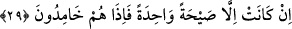
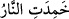
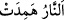
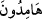

yüzden bazı ümmetleri taşlar savuran kasırga ile, bazılarını korkunç bir sesle, bir
kısmını yerin dibine geçirmekle, bazılarını da suda boğmak sûretiyle yok ettik. Kavmine
galip gelmen için gökten ordu indirmeyi de sana mahsus bir özellik yaptık.
Âyette Antakya halkı ve onların helâk edilmeleri küçük görülmektedir. Çünkü onların
köklerinin kesilmesi hususunda, kuşları ve vahşi hayvanları men etmek için bununla
emrolunmuş bir kulun haykırması gibi bir vesile ile yetinilmiştir. Burada Rasûlullah
(s.a.)’in şânının yüceliğine de îmâ vardır. Çünkü bir meleğin azıcık bir seslenmesi
kalabalık bir topluluğun helâki için yeterli olunca Bedir ve Hendek savaşlarında
düşmanların helâki için gökten orduların indirilmesi ancak Peygamberimiz (s.a.)’in
şânını yükseltmek ve kadrini yüceltmek içindir. Yoksa bu kadar meleğin yardım ve
desteğine ihtiyaç olduğundan değildir.
Eğer “Allah onların üzerine gökten bir ordu indirmediği gibi yerden de bir ordu
göndermemiştir. O halde “gökten” buyrulmasının faydası nedir?” diye sorulursa, bunun
cevabı şöyledir: Bu ifâde, yerden ordu gönderilmediğini belirtmek için değil bilakis
gökten onların üzerine inenin onların hepsini helâk eden bir tek ses olduğunu açıklamak
içindir.
29. (Onları helâk eden) korkunç sesten başka bir şey değildi. Birdenbire
sönüverdiler.
Antakya halkının helâk ve cezâlandırılması “korkunç sesten başka bir şey değildi.”
Cebrâil (a.s.) iki kanadı ile onların şehrini tutup sayha vurdu. “Birdenbire
sönüverdiler.” Ölüverdiler. Artık onlardan bir his duyulmaz ve bir hareket müşâhede
edilmez.
Diri olanın hareket ve alevlenme konusunda yanıp yükselen ateş gibi, ölü olanın da
kül gibi olduğuna işâret edilerek onlar sönen ateşe benzetildi.
Alevi sâkinleşip koru sönmediği zaman ateşe: “
” denir. Koru da söndüğü
zaman “
” denir. el-Kevâşî’de der ki: “Onlar helâk olduktan sonra geriye
cesedleri kaldığı için her ne kadar daha beliğ olsa da Allah Teâlâ “
(korları bile
sönmüş olarak kaldılar)” buyurmamıştır.
Korkunç ses Habîbü’n-neccâr ve elçilerin öldürülmesinin üçüncü gününde veya
onları öldürdükleri gün meydana gelmiştir. Bir rivâyette ise onları öldürüp sevinç ve
neşe ile evlerine döndükleri saatte olmuştur. Allah şehid edilen dostları için
öfkelenerek onları cezâlandırmakta acele etmiştir. Çünkü arslanın yavrusu için
öfkelenip kükrediği gibi Allah Teâlâ da dostları için gazab eder.
Allah Teâlâ’dan gazab, öfke ve azabını gerektirecek şeylerden bizi korumasını niyaz
ederiz.